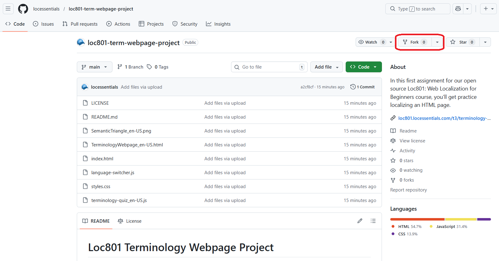

Proyecto Página de Terminología
Bifurca un repositorio de GitHub y localiza una página HTML sobre terminología e IA generativa del inglés estadounidense al español mexicano.
Recorrido en Video
Antes de comenzar esta tarea, observa el recorrido completo de la página HTML que vas a localizar. El video demuestra la estructura de los archivos, explica cuáles elementos requieren traducción y proporciona orientación sobre cómo manejar diferentes componentes HTML.
El video cubre los tres componentes fundamentales que hacen funcionar una página web (HTML para la estructura, CSS para el estilo y JavaScript para la interactividad), explica la estructura de las etiquetas HTML, demuestra el uso de las herramientas de desarrollo del navegador y destaca consideraciones específicas de localización incorporadas como comentarios en el código fuente.
Bifurca el Repositorio
Una vez que estés listo para comenzar el proyecto, tu primer paso es crear tu propia copia del código bifurcando el repositorio. Bifurcar crea una copia independiente bajo tu cuenta de GitHub donde puedes hacer cambios sin afectar el original.
Navega al Repositorio
Ve al repositorio loc801-term-webpage-project en GitHub.
Haz Clic en el Botón Fork
En la esquina superior derecha de la página del repositorio, haz clic en el botón "Fork".

Crea Tu Bifurcación
GitHub te pedirá que elijas dónde crear la bifurcación. Selecciona tu cuenta personal. Puedes mantener el nombre del repositorio predeterminado o personalizarlo si lo prefieres. Una vez creada, serás redirigido a la página de tu repositorio bifurcado.
Clona el Repositorio en Tu Computadora
Ahora que tienes tu propia bifurcación, necesitas descargarla a tu computadora para poder editar los archivos en Visual Studio Code. Este proceso se llama "clonar".
Obtén la URL del Repositorio
- En la página de tu repositorio bifurcado en GitHub, haz clic en el botón verde Code
- Asegúrate de que HTTPS esté seleccionado
- Copia la URL (se verá como
https://github.com/tunombredeusuario/loc801-term-webpage-project.git)
Clona Usando la Línea de Comandos
- Abre Git CMD (Windows) o Terminal (macOS/Linux)
- Navega a donde quieres almacenar el proyecto. Por ejemplo:
cd C:\Users\tunombre\Documents\GitHub - Clona el repositorio:
git clone https://github.com/tunombredeusuario/loc801-term-webpage-project.git - Una carpeta llamada
loc801-term-webpage-projectque contiene todos los archivos del proyecto debería aparecer ahora en la ubicación que elegiste
Verifica la Clonación
Navega a la ubicación de carpeta que especificaste y confirma que la carpeta loc801-term-webpage-project existe con todos los archivos dentro (index.html, TerminologyWebpage_en-US.html, styles.css, etc.).
Comprende el Repositorio
Antes de sumergirte en el trabajo de traducción, tómate tiempo para comprender la estructura del repositorio y su documentación. Los proyectos de localización profesionales típicamente incluyen varios archivos clave.
¿Qué es un README?
Un archivo README es el manual de instrucciones de un repositorio. Es típicamente el primer archivo que los desarrolladores y colaboradores leen cuando encuentran un proyecto. Los READMEs usualmente explican qué hace el proyecto, cómo configurarlo, cómo usarlo y cualquier información importante sobre contribuir o licencias.
En este repositorio, el archivo README.md proporciona instrucciones integrales sobre la estructura del proyecto, qué necesita traducirse, qué puede dejarse sin cambios y cómo probar tu trabajo localmente y en GitHub Pages.
Comprende la LICENCIA
El archivo LICENSE especifica cómo puedes usar, modificar y distribuir el proyecto legalmente. Este repositorio usa una Licencia Creative Commons Attribution 4.0 International (CC BY 4.0), lo que significa que puedes:
- Usar el contenido para cualquier propósito, incluyendo comercialmente
- Modificar y adaptar el contenido
- Compartir tu versión modificada
- Incluir tu trabajo en tu portafolio profesional
El único requisito es que debes dar crédito apropiado a la autora original (Alaina Brandt) e indicar si se hicieron cambios. Cuando crees tu traducción al español, debes acreditarte como traductor mientras mantienes la atribución a la autora original.
Instrucciones de la tarea
Tu tarea es crear una localización al español mexicano de la página web de terminología. Sigue las LOC NOTES incorporadas en los comentarios HTML para obtener orientación sobre cómo manejar elementos específicos.
Crea el Archivo HTML en Español
Duplica TerminologyWebpage_en-US.html y renómbralo a TerminologyWebpage_es-MX.html. Este será tu archivo de trabajo para la traducción al español.
Actualiza el Atributo de Idioma
Cambia el atributo HTML lang de en-US a es-MX. Esto ayuda a los navegadores y tecnologías de asistencia a renderizar correctamente tu contenido.
Traduce los Elementos Requeridos
Trabaja en el archivo sistemáticamente, traduciendo todos los elementos requeridos enumerados en la lista de verificación a continuación. Presta especial atención a:
- Título principal de la página y todos los encabezados (h1, h2, h3)
- Todo el texto de párrafos y contenido de listas
- Elementos de navegación y la etiqueta del selector de idiomas
- Preguntas del cuestionario y texto de botones
- Texto alternativo de imágenes para accesibilidad
- Metadatos de página (etiqueta title y meta description)
Prueba Localmente
Abre TerminologyWebpage_en-US.html en tu navegador o con Live Server en Visual Studio Code. Usa el selector de idiomas para cambiar entre las versiones en inglés y español. Verifica que todo el contenido se muestre correctamente y que la expansión del texto no haya roto el diseño.
Confirma y Sube
Confirma tus cambios con un mensaje claro como "Añadir localización al español mexicano" y súbelo a tu repositorio bifurcado.
Habilita GitHub Pages
En la configuración de tu repositorio, navega a Pages y habilita la implementación de GitHub Pages desde la rama principal. Después de unos minutos, tu sitio estará en vivo en https://tunombredeusuario.github.io/loc801-term-webpage-project/.
Prueba en GitHub Pages
Visita tu URL de GitHub Pages y prueba la detección automática de idioma (debería mostrar español si tu navegador está configurado en español), la funcionalidad del selector de idiomas y el cuestionario en ambos idiomas.
location.reload(true). Esto activa una recarga forzada. Le indica al navegador que ignore sus copias en caché y descargue todos los archivos directamente desde el servidor. Es la forma más rápida de confirmar que tu último despliegue está realmente activo, sin afectar la caché de otras páginas en tu navegador.
Lista de Verificación Pre-Entrega
Antes de compartir tu trabajo, verifica que hayas completado todos los elementos requeridos. Usa esta lista de verificación como tu control de calidad final.
Elementos Requeridos
1. Componentes Estructurales
- El nombre del archivo es exactamente
TerminologyWebpage_es-MX.html - El atributo HTML
langcambiado aes-MX
2. Contenido HTML Principal
- Título principal de la página traducido
- Todos los encabezados (h1, h2, h3) traducidos
- Todo el texto de párrafos traducido
- Elementos de navegación traducidos
- Listas (ordenadas y no ordenadas) traducidas
- Leyendas de figuras traducidas
3. Metadatos y SEO
- Etiqueta title de la página (
<title>) traducida - Meta description traducida
4. Elementos Interactivos
- Etiqueta del selector de idiomas traducida
- Texto de preguntas del cuestionario traducido
- Texto de botones traducido
5. Elementos de Accesibilidad
- Texto alternativo de imágenes traducido
Elementos Adicionales Opcionales
Para práctica extra y fortalecer tu portafolio:
6. Contenido JavaScript
- Crear
terminology-quiz_es-MX.js - Traducir mensajes de retroalimentación del cuestionario
- Traducir respuestas correctas/incorrectas
- Traducir mensajes de contenido dinámico
- Traducir mensajes de error para el usuario
7. Contenido de Imagen
- Recrear la imagen del triángulo semántico con etiquetas en español
- Guardar como
SemanticTriangle_es-MX.png
- Precisión gramatical - Gramática y sintaxis correctas del español
- Precisión técnica - Traducción precisa de terminología y conceptos de localización
- Adecuación cultural - Sigue las convenciones y normas culturales del español mexicano
- Preservación del formato - Caracteres especiales, estructura HTML y estilo mantenidos
- Lenguaje inclusivo - Usa construcciones neutrales de género donde sea apropiado en español
Problemas Comunes a Evitar
- Dejar texto en inglés en atributos alt - estos a menudo se pasan por alto pero son cruciales para la accesibilidad
- Perder traducciones en elementos HTML anidados - asegúrate de traducir el contenido dentro de otras etiquetas
- No tomar en cuenta la expansión del texto - el español es típicamente 15-30% más largo que el inglés, así que verifica que tu diseño no se rompa
- Romper el formato HTML/CSS durante la traducción - ten cuidado de no eliminar accidentalmente etiquetas de cierre o modificar nombres de clases
- Olvidar actualizar el atributo
langaes-MX- esto es fácil de pasar por alto pero importante para SEO y accesibilidad - Traducir nombres de archivos técnicos o referencias de código - nombres de archivo como
language-switcher.jsdeben permanecer sin cambios
Entrega
Entrega el enlace a tu sitio de GitHub Pages en el formato solicitado por quien enseña el curso:
https://tunombredeusuario.github.io/loc801-term-webpage-project/
Quien enseña el curso probará la detección automática de idioma, la funcionalidad del selector de idiomas, la calidad de traducción y adecuación cultural, y verificará que todos los elementos requeridos de la lista de verificación se hayan completado.